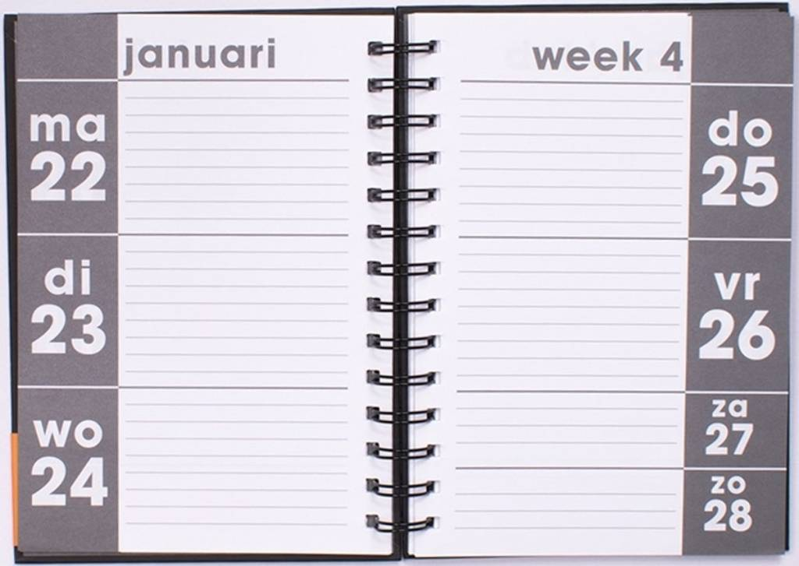

Bezoek de nieuwe tentoonstellingsruimte van het Rijks
In november opent dan eindelijk de nieuwe tentoonstellingsvleugel van het Rijksmuseum. De Philipsvleugel huisvest dertien zalen die in het teken zullen staan van fotografie - tot nu toe een ondergeschoven kindje - en een groot restaurant met wisselende chefs, die rouleren als gastconservatoren en waar plek is voor 120 mensen om te lunchen en dineren. Leuk detail: eten doe je van borden gemaakt van klei van de Noord/Zuidlijn. De tentoonstelling waarmee het Rijks aftrapt, Modern Times, Fotografie in de 20ste eeuw, bestaat uit vierhonderd werken uit de eigen collectie en toont de geschiedenis van de fotografie.
